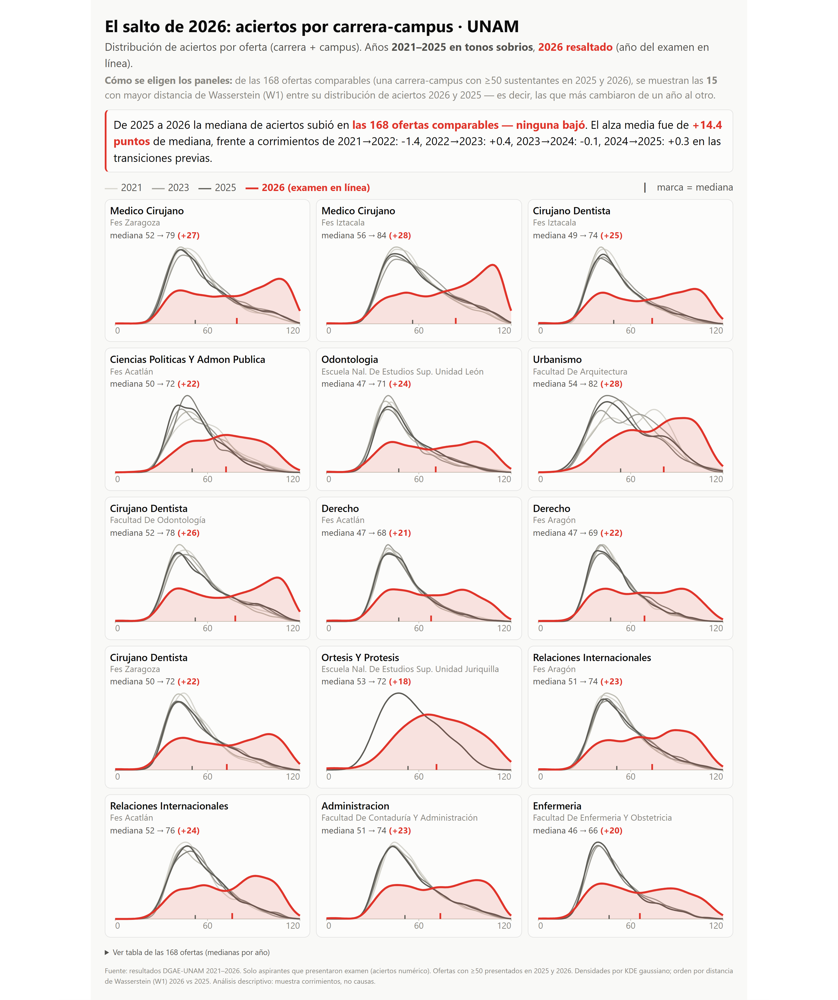
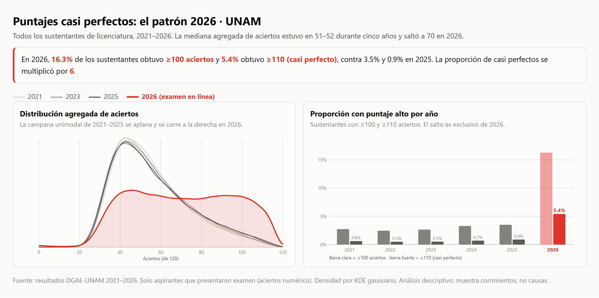
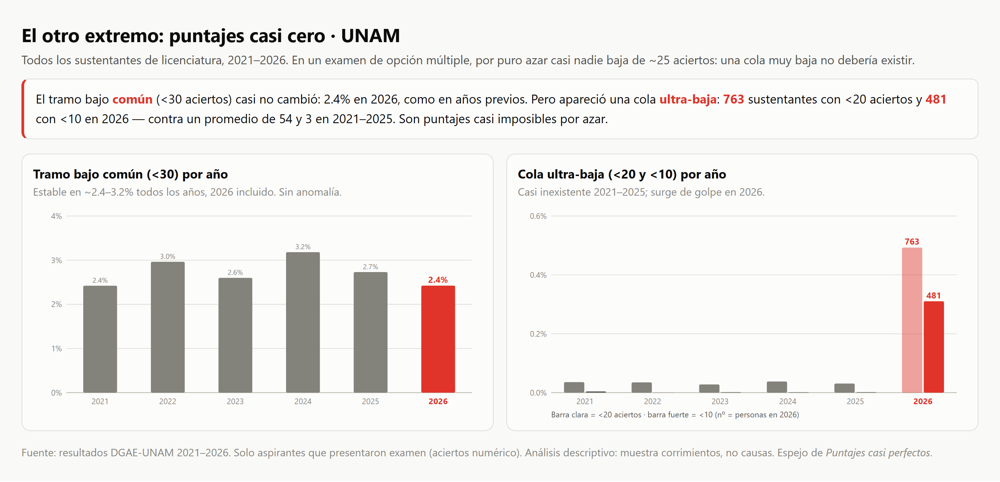
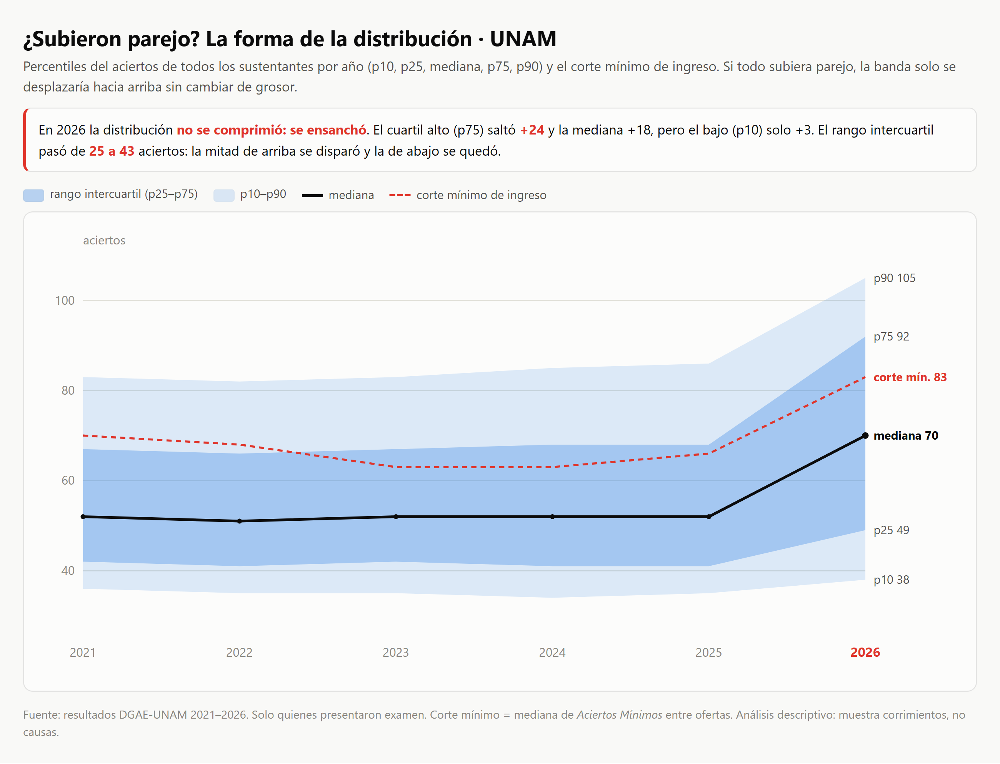
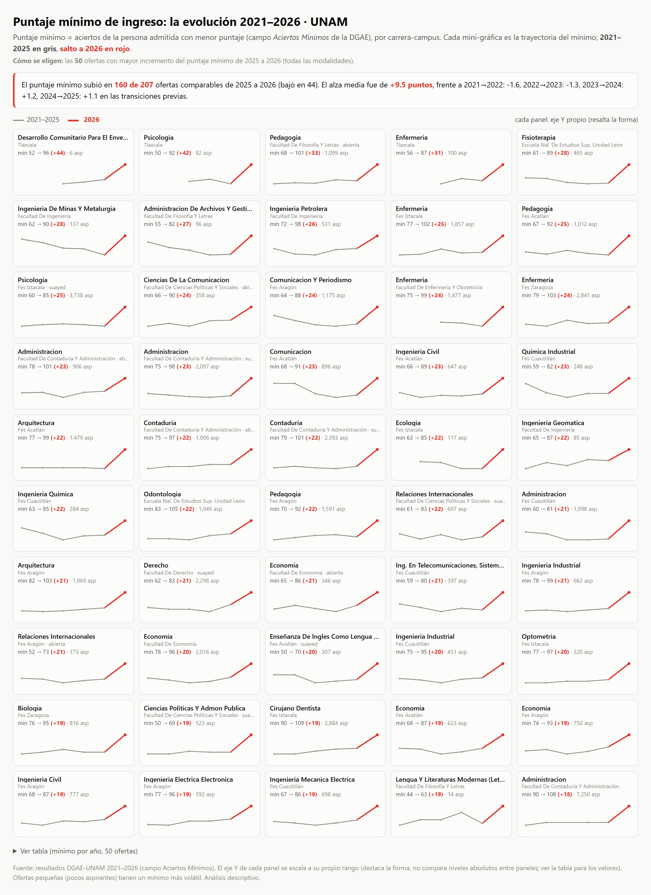
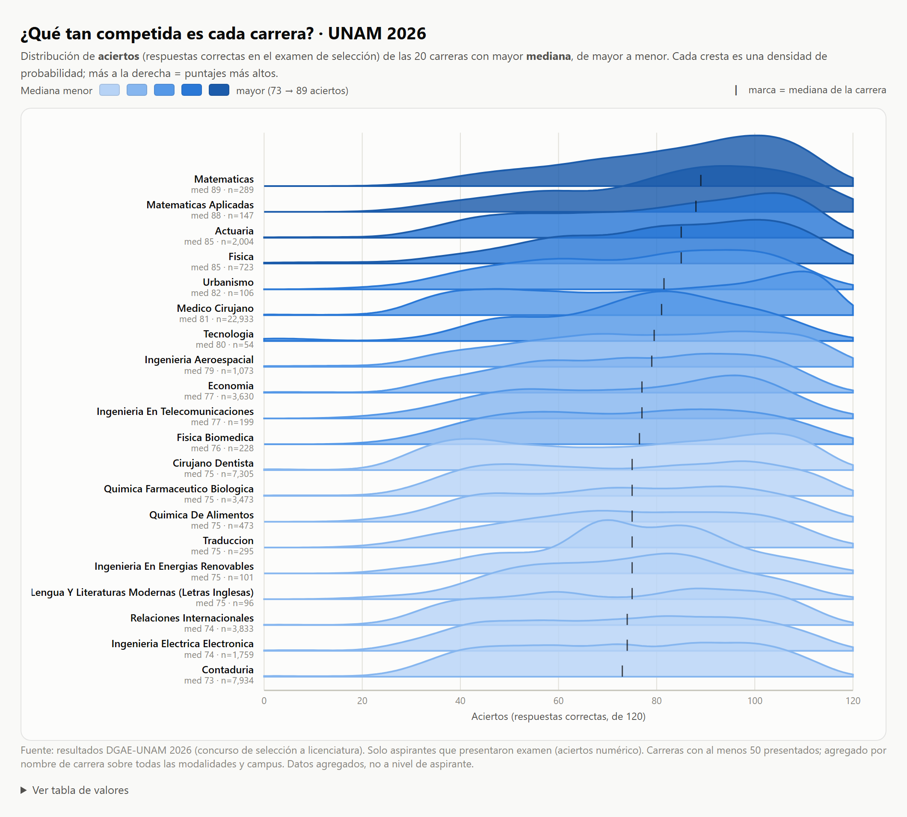

Análisis de los resultados del concurso de selección a licenciatura (DGAE), extraídos a datos abiertos. En 2026, primer año con examen en línea, los aciertos saltaron en las 168 carreras comparables (ninguna bajó): +14.4 puntos de mediana, frente a ±1.5 entre años previos. Estas visualizaciones muestran ese cambio, de forma descriptiva.

Distribuciones de aciertos: 2021–2025 vs 2026, las 50 ofertas que más cambiaron.
Ver interactivo →
Proporción con ≥100 y ≥110 aciertos por año: de 0.9% a 5.4% en 2026.
Ver interactivo →
Una cola de puntajes ultra-bajos (<20 y <10) que apareció en 2026.
Ver interactivo →
Fan de percentiles: en 2026 la distribución no se comprimió, se ensanchó.
Ver interactivo →
La evolución del corte mínimo; top 50 ofertas por incremento 2025→2026.
Ver interactivo →
Ridgeline de la distribución de aciertos (2026).
Ver interactivo →